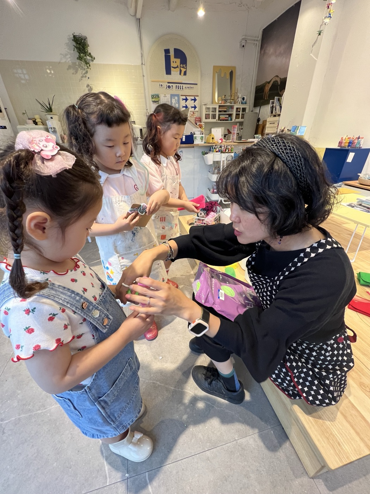

어바웃 ABOUT
3년 동안, 창작 체험에 진심인 곳.
무엇을 믿고 이 판을 여는지 — 여기 다 적어둘게요.
WHY — 왜 이 공간을 열었나
배우는 건 많은데,
만드는 시간이 없어요.
영상도, 학원도, 책도.
아이 안으로 들어가는 건 이렇게 많은데
밖으로 나올 자리는 어디 있을까요.
거창한 미디어아트가 아니라, 동네에서.
작은 경험이 쌓여 ‘나’가 됩니다.
VOICE — 아이의 말
“선생님, 저는 여기
숨 쉬러 와요.”
— 어느 초등학생이 문을 열며 해 준 말
여기는 학원이 아니에요. 아이의 아지트예요.
진도도, 숙제도, 레벨도 없어요.
놀다 가는 곳인데 — 놀다 보면 생각이 태어나요.
HOW — 무엇을 하며 노는가
오늘 무슨 말로 이야기할지는
아이가 골라요.
-
예술
생각을 보이게 한다
물감과 붓, 종이와 가위. 손으로 만들어 눈앞의 형태로.
-
코딩 · 로봇
생각을 움직이게 한다
코딩 로봇과 레고 스파이크. 이야기에 움직임을 더해 살아나게.
어른들은 이걸 과목이라 부르지만,
아이에게는 전부 ‘내 이야기를 하는 말’이에요.
PSCR — 인조이풀에서 발견하는 과정
아이 안에서 일어나는 일에,
이름을 붙여봤어요.
순서대로 밟는 과정이 아니에요.
아이마다, 날마다 다르게 일어나요. 어떤 날은 하나만 오래 머물기도 하고요.
-
멈춤 Pause
문을 열고 들어오는 순간, 일상이 잠깐 멈춰요. 학교도 학원도 아닌 시간으로 들어서는 거예요.
-
감각 Sense
감각을 깨우는 환경 안에서 보고, 만지고, 느껴요. 머리로 아는 게 아니라 몸으로 겪는 시간이에요.
-
표현 Create
느끼면 생각이 태어나요. 그 생각을 그냥 흘려보내지 않고, 어떤 방법으로 꺼낼지 아이가 직접 고릅니다.
-
돌아봄 Reflect
내가 만든 것을 두고 무엇을, 왜 만들었는지 이야기해요. 이 이야기가 경험을 ‘나의 것’으로 만들어요.
이 시간을 지나온 아이들에게서 보는 변화 —
내면이 단단해지고, 관찰력이 자라고,
다른 관점을 이해하게 되고, 나만의 취향을 찾아가요.
WHO — 만드는 사람

안녕하세요, 올리예요.
아이들은 원래 감각이 살아있어요.
제가 하는 일은, 그 감각이 마음껏 펼쳐질 자리를 만드는 거예요.
재료를 꺼내 두고, 시간을 넉넉히 두고 —
오늘 무엇을 할지는 아이가 정해요.
이 공간의 시작은 저였어요.
네 명을 키우는 엄마가 어느 날
‘나를 만나는 시간’을 만나 변했거든요.
아이는 아웃풋의 습관이 생기면 관점이 달라지고,
어른은 잠깐이라도 나를 만나면 숨이 트여요.
그걸 믿어서, 이 문을 열었어요.
인조이풀을 만나서
나의 생각을 표현해볼 기회가 되기를.
표현하면서, 나를 만나고 —
나를 만나면서, 나를 더 사랑하고 —
그렇게 내 안의 행복을 채워가는 시간이 되기를.
It’s not about doing,
it’s about Being.
— 이한나 (올리 · OLi)
감각을 깨우는 환경 디자이너
인조이풀을 만들고 지키는 사람 · Artist · Host · Researcher
이 공간의 실험과 기록은 연구실 CREA:D Lab에 차곡차곡 쌓입니다.
FAQ — 자주 받는 질문
문 앞에서 머뭇거리게 되는
것들이 있죠.
몇 살부터 갈 수 있나요?
18개월부터요. 토들러팝(18~30개월)은 보호자와 함께, 키즈팝(5~7세)부터는 아이 혼자. 위로는 올드팝·시니어팝까지 — 정말로 전 세대가 같은 책상에서 만들어요.
그림을 못 그려도 되나요?
여긴 잘 그리는 곳이 아니라 꺼내는 곳이에요. ‘못 그린다’는 말은 문 앞에 두고 들어오세요.
부모가 같이 있어야 하나요?
아이 혼자 놀다 가도 좋아요. 기다리는 동안 어른도 자기 자리를 하나 가져도 좋고요 — 여기는 어른에게도 아지트니까요.
예약은 어떻게 하나요?
예약제로 운영해요. 카카오채널이나 인스타그램(@in.joyfull) DM, 전화(010-2944-8023)로 편하게 물어봐 주세요. 첫 타임을 먼저 해보고 이어갈지 정하셔도 돼요 — 다만 그 체험도 정식 워크숍이라 회차 비용이 있어요. 무료 체험은 따로 없어요.
어른 혼자 가도 되나요?
네. 올드팝이 어른의 시간이에요. 혼자 오시는 분이 더 많아요.
초등학생이 되면 학원 다니느라 못 오지 않을까요?
솔직히 말하면, 학원 나이가 되면 떠나는 아이들이 있어요. 그런데 시간표가 빡빡해질수록 더 필요해지는 게 있더라고요 — 아무것도 증명하지 않아도 되는 한 시간. 일주일에 한 시간만, 아이의 숨구멍으로 남겨 주세요.